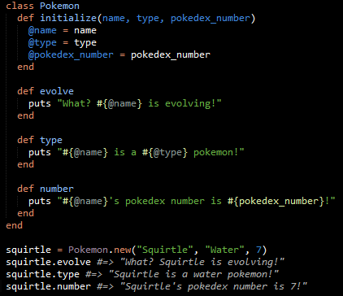

I've been rewatching Pokemon: Indigo League (don't judge, it's an amazing show). While I was watching Pikachu get pummeled by Lieutenant Surge's Raichu I realized that using pokemon for my classes blog would work perfectly. And so I present to you my glorious blog about pokemon classes.
It is best to think of a ruby class as a blueprint that is used to create objects in a running system. In other words, classes allow you to have a general template that can be reused as many times as you want; this means that you won't have to constantly rewrite the same method over and over. The best way to explain exactly how this works is to create our own, and that is exactly what I plan to do.

Let's take a closer look at this quick class I've created. Within the class is a method called initialize. This method by itself doesn't do anything; it needs outside information to fill the empty attributes that is given inside it. The next three parts of the class are simple methods that use the information that has been initialized to fulfill their purposes. So when we create a new pokemon (Squirtle in this example, because i'm too chicken to start with Charmander), each attribute of Squirtle is fed into the pokemon class, effectively replacing each variable with a Squirtle attribute. The reason why we we assigned each variable inside the initialized method to an instance variable (that's the variable with the @ sign in the front) is because using an instance variable allows us to reuse it over and over again.
Ok, that's enough blogging for now. Back to watching Ash lose to his opponent twice only to defeat them in a super contrived manner in their third and final encounter.